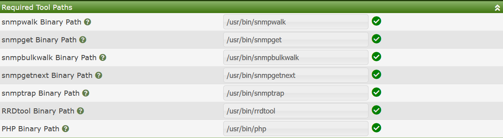
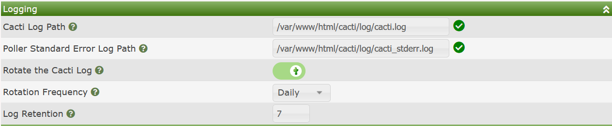
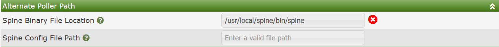
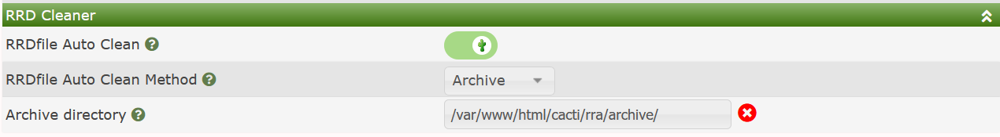

Cacti's Path Settings include mainly the locations of core binaries that Cacti must call in order to operate correctly. Generally, these binaries are included in the Web Servers path, but being able to override these settings is important, especially for debugging issues. Cacti's Paths sub-tab is broken into the following sub-sections:
When using Cacti's Remote Data Collectors or Remote Pollers the settings that refer for a File Path, or Directory Path will be local to the Data Collector. Therefore, you can have one set of paths for your Main Cacti site, and another set of paths for your Remote Poller, say in the case that they are on Windows.
The image below shows Cacti's Required Tool Paths settings.

Those settings include:
snmpwalk Binary Path - This is the path to the snmpwalk binary.
snmpget Binary Path - This is the path to the snmpget binary.
snmpbulkwalk Binary Path - This is the path to the snmpwalk binary. This binary path is essential if you use SNMPv2 of SNMPv3 versions where Data Queries perform bulkwalks by default to increase performance.
snmpgetnext Binary Path - This is the path to the snmpgetnext binary.
snmptrap Binary Path - This is the path to the snmptrap binary. This binary is important for SNMP Notification and Trap generation.
RRDtool Binary Path - The location of the RRDtool binary that matches your RRDtool version.
PHP Binary Path - The location of the PHP Binary, generally, this setting is always /usr/php, but can change for some users.
The next set of settings define where Cacti's Standard Output and Standard Error files are to be placed, and how they should be rotated, and for how long they should be retained. You can see those settings from the image below.

Those settings include:
Cacti Log Path - The location of Cacti's Standard Output (stdout) log file.
Poller Standard Error Log Path - For Cacti's Data Collector functions only, the location of the Standard Error (stderr) log file.
Rotate the Cacti Log - Determines if Cacti or the package maintainer rotates the Cacti log.
Rotation Frequency - Should the Log files be rotated Daily or Weekly or Monthly
Log Retention - How many generations of Log files should be maintained. Older files will be removed automatically.
NOTE: Some package maintainers control log rotation and therefore the log rotation settings may be missing from certain version of Cacti if you install through a packaging tool such as
apt-get,yumordnf
The sub-section hold information on how to find Cacti's spine binary if it's installed. Since spine is written in ANSI C, it is not provided as a part of the Cacti install and must be compiled by the Cacti Administrator. The benefit of the spine binary is that it's mufti-threaded and extremely scalable. It's possible to poll enterprises with excess of 30,000 devices using spine on a reasonably large system. The image below show's this sub-section.

Those settings include:
Spine Binary File Location - The path to the spine binary.
Spine Config File Path - This setting is optional. If blank, Cacti will search the following locations for a spine.conf file.
etc directory of the spine binary directory.This setting defines how Cacti manages RRDfiles from Data Sources that have been removed. By default, Cacti does not manage these files, and leaves it to the Cacti Administrator to pro-actively manage them. The RRD Cleaner settings can be seen in the image below. Note that unless you enable RRDfile Auto Clean, you will not see the other settings by default.

Those settings include:
RRDfile Auto Clean - Denotes that you wish Cacti to manage RRDfiles from removed Data Sources potentially automatically.
RRDfile Auto Clean Method - This is the method to perform cleanup. Options include:
Archive directory - The Archive directory to move old RRDfile to.
Copyright (c) 2004-2024 The Cacti Group